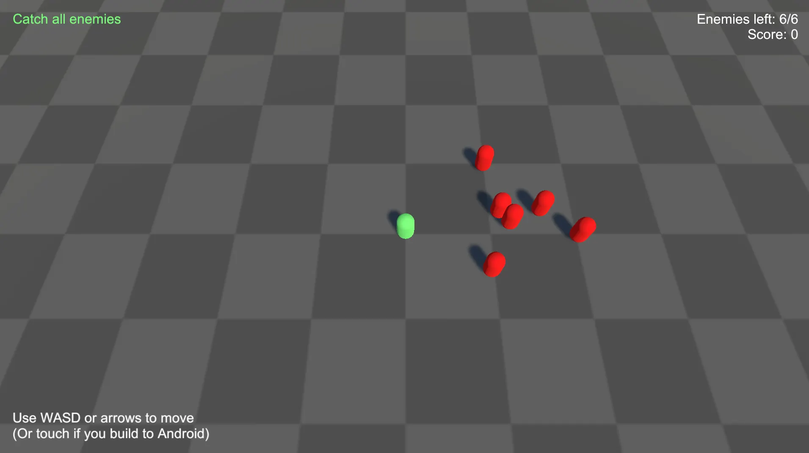

Sample game
The sample game is a compact reference project that shows how Saneject is used in a real Unity setup.
You control a green player character. Red enemies wander around the map and flee when you get close. Catch them all to end the round, then restart from the game-over UI.

Some older Unity versions (for example
2022.3.12f1) can lose script references when importing samples from Package Manager. If that happens, right-click the importedSamplesfolder and choose Reimport. Reference discussion: https://discussions.unity.com/t/broken-script-references-on-updating-custom-package-through-package-manager-and-committing-it-to-git/910632/7
The sample intentionally keeps gameplay simple so you can focus on dependency structure:
- Multiple scopeScope
MonoBehaviourthat declares bindings for a part of your hierarchy. levels: bootstrap, scene-wide, object-local, and prefab-local bindingsBindingInstruction declared in aScopethat tells Saneject what to resolve, how to inject it, and where to search.. - Interface-first wiring: most systems communicate through interfaces instead of hard references.
- Global gameplay registrations: the player, camera controller, enemy manager, score manager, and game-state manager are registered through
BindGlobal<T>(). - Runtime proxy bridges: UI and prefab systems consume scene-owned services through runtime proxy bindingsRuntime proxy bindingComponent binding configured with
FromRuntimeProxy()that injects a proxy asset at editor time and swaps it for a real runtime instance during scope initialization.. - Runtime-created service: the sample's
ISceneManageris created from a runtime proxy binding withFromNewComponentOnNewGameObject().AsSingleton(). - UI integration: HUD, game-over UI, and enemy markers react to gameplay state through interfaces.
Where to find it
| Install method | Location |
|---|---|
| Unity package | Assets/Plugins/Saneject/Samples~/DemoGame |
| Imported Package Manager sample | Assets/Samples/Saneject/<version>/DemoGame |
How to run the sample
- Add scenes to Build Settings in this order:
StartSceneGameSceneUIScene
- Open
StartScene. - Enter Play Mode.
Scene flow
The sample uses a small bootstrap scene plus two additive runtime scenes:
StartScene: bootstrap scene that containsBootstrapScopeandBootstrapper.GameScene: gameplay systems (player, enemies, score, game state, camera).UIScene: HUD and game-over UI.
At runtime:
BootstrapperresolvesISceneManager.- The
ISceneManagerimplementation loadsGameSceneandUISceneadditively. StartSceneis unloaded.- Restart loads
StartSceneagain withLoadSceneMode.Single.
Scope layout and responsibilities
The sample demonstrates scopeScopeMonoBehaviour that declares bindings for a part of your hierarchy. composition at multiple levels:
BootstrapScope: declares the bootstrap binding that creates the runtimeISceneManager.GameSceneScope: declares scene-level gameplay bindingsBindingInstruction declared in aScopethat tells Saneject what to resolve, how to inject it, and where to search., global registrationsGlobal registrationEntry added toGlobalScopeat runtime, keyed by the component's concrete type and owned by the caller that registered it., and the enemy prefab asset binding.PlayerScope: declares player-local bindingsBindingInstruction declared in aScopethat tells Saneject what to resolve, how to inject it, and where to search. such as movement dependencies.EnemyScope: declares per-enemy prefab bindingsBindingInstruction declared in aScopethat tells Saneject what to resolve, how to inject it, and where to search. and runtime proxy access to the player and camera.UISceneScope: declares UI-side bindingsBindingInstruction declared in aScopethat tells Saneject what to resolve, how to inject it, and where to search., including runtime proxies to gameplay systems and the restart scene manager.
This layout shows the core Saneject rule in practice: each Scope owns bindingsBindingInstruction declared in a Scope that tells Saneject what to resolve, how to inject it, and where to search. for its local part of the hierarchy, while parent scopesScopeMonoBehaviour that declares bindings for a part of your hierarchy. provide fallback when local bindingsBindingInstruction declared in a Scope that tells Saneject what to resolve, how to inject it, and where to search. do not match.
Binding patterns shown by the sample
1. Bootstrap-created runtime service
BootstrapScope binds ISceneManager through a runtime proxy that creates the concrete component on demand:
using Plugins.Saneject.Runtime.Scopes;
using Plugins.Saneject.Samples.DemoGame.Scripts.SceneManagement;
public class BootstrapScope : Scope
{
protected override void DeclareBindings()
{
BindComponent<ISceneManager, SceneManager>()
.FromRuntimeProxy()
.FromNewComponentOnNewGameObject()
.AsSingleton();
}
}
Why this matters:
- The sample is not limited to resolving pre-existing scene objects.
SceneManageris created at runtime, cached as a singleton, and then reused through the same interface from other contextsContextSerialization boundary Saneject uses during injection to decide scope traversal and candidate eligibility..- This shows the creation-based side of runtime proxyRuntime proxy
ScriptableObjectplaceholder asset (RuntimeProxy<TComponent>) injected into interface members at editor time and swapped to the real instance during scope startup. bindings, not just lookup-based proxies.
See Runtime proxy.
2. Scene-level composition and globals
GameSceneScope declares both normal bindingsBindingInstruction declared in a Scope that tells Saneject what to resolve, how to inject it, and where to search. and global registrationsGlobal registrationEntry added to GlobalScope at runtime, keyed by the component's concrete type and owned by the caller that registered it.:
using Plugins.Saneject.Runtime.Scopes;
using Plugins.Saneject.Samples.DemoGame.Scripts.Camera;
using Plugins.Saneject.Samples.DemoGame.Scripts.Enemies;
using Plugins.Saneject.Samples.DemoGame.Scripts.GameState;
using Plugins.Saneject.Samples.DemoGame.Scripts.Highscore;
using Plugins.Saneject.Samples.DemoGame.Scripts.PlayerSystems;
using UnityEngine;
public class GameSceneScope : Scope
{
protected override void DeclareBindings()
{
BindGlobal<Player>()
.FromScopeDescendants();
BindGlobal<EnemyManager>()
.FromScopeDescendants();
BindGlobal<ScoreManager>()
.FromScopeDescendants();
BindGlobal<CameraController>()
.FromScopeDescendants();
BindGlobal<GameStateManager>()
.FromScopeDescendants();
BindComponent<ICameraFollowTarget, Player>()
.FromScopeDescendants();
BindComponent<IScoreUpdater, ScoreManager>()
.FromScopeDescendants();
BindComponent<IEnemyObservable, EnemyManager>()
.FromScopeDescendants();
BindComponent<Camera>()
.FromAnywhere();
BindAsset<GameObject>()
.ToTarget<EnemyManager>()
.ToMember("enemyPrefab")
.FromAssetLoad("Assets/Plugins/Saneject/Samples/DemoGame/Prefabs/Enemy.prefab");
}
}
Why this matters:
- Gameplay systems in
GameSceneresolve dependencies directly with component and asset bindingsAsset bindingBinding declared withBindAsset...orBindAssets...that resolvesUnityEngine.Objectassets from project content instead of scene or hierarchy components.. - UI and prefab contextsContextSerialization boundary Saneject uses during injection to decide scope traversal and candidate eligibility. can resolve the player, camera, score manager, enemy manager, and game-state manager at runtime through
GlobalScope. - The sample shows both local scene wiring and the global-registration pattern in the same scope.
See Global scope.
3. Runtime proxy bridges for UI and enemy prefabs
UI systems and enemy prefab systems consume gameplay interfaces through runtime proxiesRuntime proxyScriptableObject placeholder asset (RuntimeProxy<TComponent>) injected into interface members at editor time and swapped to the real instance during scope startup.:
using Plugins.Saneject.Runtime.Scopes;
using Plugins.Saneject.Samples.DemoGame.Scripts.Camera;
using Plugins.Saneject.Samples.DemoGame.Scripts.Enemies;
using Plugins.Saneject.Samples.DemoGame.Scripts.PlayerSystems;
using Plugins.Saneject.Samples.DemoGame.Scripts.UI.Enemy;
using UnityEngine;
using UnityEngine.UI;
public class EnemyScope : Scope
{
protected override void DeclareBindings()
{
BindComponent<IEnemyEvadeTarget, Player>()
.FromRuntimeProxy()
.FromGlobalScope();
BindComponent<IMainCamera, CameraController>()
.FromRuntimeProxy();
}
}
The UI scene uses the same pattern for IGameStateObservable, IScoreObservable, IEnemyObservable, and ISceneManager.
Why this matters:
- Enemy prefabs and UI components stay decoupled from direct scene references.
- The sample demonstrates both explicit
FromGlobalScope()and the default behavior whenFromRuntimeProxy()is used without a follow-up resolve method. - The shipped sample also includes pre-generated proxy assets under
DemoGame/Proxies, so you can inspect the concrete proxy setup directly.
See Runtime proxy and Context.
4. Interface injection in gameplay and UI
Most sample systems depend on interfaces, not concrete classes. That is why interface fields use [SerializeInterface].
using Plugins.Saneject.Runtime.Attributes;
using Plugins.Saneject.Samples.DemoGame.Scripts.Enemies;
using Plugins.Saneject.Samples.DemoGame.Scripts.GameState;
using Plugins.Saneject.Samples.DemoGame.Scripts.Highscore;
using Plugins.Saneject.Samples.DemoGame.Scripts.UI.MVC;
public partial class HUDController : ControllerBase<HUDView>
{
[Inject, SerializeInterface]
private IGameStateObservable gameStateObservable;
[Inject, SerializeInterface]
private IScoreObservable scoreObservable;
[Inject, SerializeInterface]
private IEnemyObservable enemyObservable;
}
This gives you:
- Decoupled systems that are easier to replace and test.
- Serialized interfaceSerialized interface
SerializeInterfacemember (IService,IService[], orList<IService>) that Saneject persists through a generated hiddenObjectbacking member. references that persist in scenes and prefabs. - Automatic proxy swap support for single interface members when runtime proxy bindingsRuntime proxy bindingComponent binding configured with
FromRuntimeProxy()that injects a proxy asset at editor time and swaps it for a real runtime instance during scope initialization. are used. - The same pattern is used in
GameOverController, which also injectsISceneManagerfor restart.
See Field, property & method injection and Serialized interface.
Game loop wiring shown by the sample
The game loop is connected through interface events and injected collaborators:
BootstrapperresolvesISceneManagerand starts the additive scene flow.EnemyManagerspawns enemies and tracks the active set.- Each
EnemyraisesOnEnemyCaughtwhen the player collides with it. ScoreManageradds points for each caught enemy.GameStateManagermonitors the remaining enemy count and emits game over when the count reaches zero.HUDControllerupdates the live HUD, whileGameOverControllershows the final summary and restart button.- Restart uses the same injected
ISceneManager, which reloadsStartScene.
Separately, EnemyMarker uses runtime proxy access to the player and camera so it can clamp off-screen enemy indicators without direct cross-context references.
The important part is not the gameplay logic itself. The important part is that each step is wired through scoped bindingsBindingInstruction declared in a Scope that tells Saneject what to resolve, how to inject it, and where to search., interface contracts, and runtime proxy boundaries instead of direct scene objectScene objectNon-prefab GameObject in a scene. references.
What to study first in the sample
If you are new to Saneject, inspect these in order:
- Bootstrap flow:
BootstrapScope,Bootstrapper,SceneManager. - Scene and prefab scopesScope
MonoBehaviourthat declares bindings for a part of your hierarchy.:GameSceneScope,UISceneScope,PlayerScope,EnemyScope. - Interface contracts:
IEnemyObservable,IScoreObservable,IGameStateObservable,ISceneManager,IMainCamera. - UI systems:
HUDController,GameOverController,EnemyMarker. - Gameplay services and entities:
EnemyManager,ScoreManager,GameStateManager,Enemy,Player.
This path gives you the fastest overview of how bindingsBindingInstruction declared in a Scope that tells Saneject what to resolve, how to inject it, and where to search., scopesScopeMonoBehaviour that declares bindings for a part of your hierarchy., and runtime proxyRuntime proxyScriptableObject placeholder asset (RuntimeProxy<TComponent>) injected into interface members at editor time and swapped to the real instance during scope startup. features fit together.